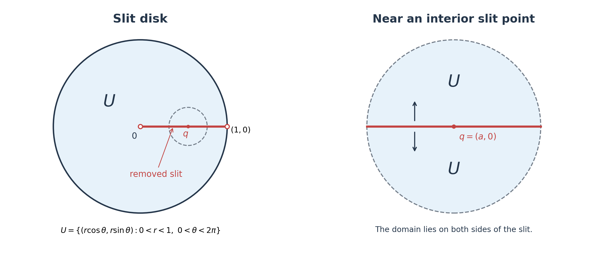

1. $W^{k,p}(U)$ 中的光滑逼近
设 $U\subset\mathbb R^n$ 为开集，$u\in W^{k,p}(U)$，$1\le p<\infty$。
1. 内部光滑逼近：不依赖边界正则性
先复习卷积的相关内容。
标准磨光核
记
$$ U_\varepsilon=\{x\in U:\operatorname{dist}(x,\partial U)>\varepsilon\}. $$定义 $\eta\in C_c^\infty(\mathbb R^n)$：
$$ \eta(x)= \begin{cases} C\exp\!\left(\dfrac{1}{|x|^2-1}\right),&|x|<1,\\ 0,&|x|\ge1. \end{cases} $$其中 $C>0$ 为归一化常数，使得 $\int_{\mathbb R^n}\eta(x)\,dx=1$。
令
$$ \eta_\varepsilon(x)=\frac1{\varepsilon^n}\eta\!\left(\frac{x}{\varepsilon}\right). $$称之为标准磨光核（standard mollifier），满足
$$ \eta_\varepsilon\ge0,\qquad \int_{\mathbb R^n}\eta_\varepsilon(x)\,dx=1,\qquad \operatorname{supp}\eta_\varepsilon\subset\overline{B(0,\varepsilon)}. $$磨光的定义
对 $f\in L^1_{\mathrm{loc}}(U)$，在 $U_\varepsilon$ 上定义
注：为什么我们在$U_\varepsilon$上定义，因为我们需要$x-y\in U$，而$x\in B(y,\varepsilon)$说明$y\in B(x,\varepsilon)$，从而为了让$y$落在$U$里，我们想要让整个$B(x,\varepsilon)$都落在$U$中，所以$x$的取值必须离边界至少有$\varepsilon$的距离。
$$ f^\varepsilon=\eta_\varepsilon*f. $$具体地，
$$ f^\varepsilon(x)=\int_U\eta_\varepsilon(x-y)f(y)\,dy=\int_{B(0,\varepsilon)}\eta_\varepsilon(y)f(x-y)\,dy. $$注：这里实际上我们积分区域可以取成全空间$\mathbb{R}^n$，然后换元之后再考虑$y$的范围。
定理：磨光的性质
- $f^\varepsilon\in C^\infty(U_\varepsilon)$。
- 当 $\varepsilon\to0$ 时，$f^\varepsilon\to f$ 几乎处处成立。
- 若 $f\in C(U)$，则 $f^\varepsilon\to f$ 在 $U$ 的每个紧子集上一致成立。
- 若 $f\in L^p_{\mathrm{loc}}(U)$，$1\le p<\infty$，则 $f^\varepsilon\to f$ 于 $L^p_{\mathrm{loc}}(U)$。
这里简单说明一下$p=\infty$的时候考虑$U=(-1,1)$并且$f=1_{(0,1)}$，相当于Heaviside函数，因为在常数函数局部做光滑化还是自己，所以实际上$f$磨光之后只在$0$附近被光滑化了，而这导致了在$0$这个点的函数差始终等于$1/2$，从而不可能逼近。
定理 6.1：局部 Sobolev 光滑逼近
若 $u\in W^{k,p}(U)$，$1\le p<\infty$，则
$$ u^\varepsilon\longrightarrow u \quad\text{于 }W^{k,p}_{\mathrm{loc}}(U),\qquad\varepsilon\to0. $$这里的意思是：对每个 $V\Subset U$，当 $\varepsilon$ 足够小时 $u^\varepsilon$ 在 $V$ 上有定义，且
$$ \|u^\varepsilon-u\|_{W^{k,p}(V)}\longrightarrow0. $$定理 6.1*：全局内部光滑逼近
若 $U$ 有界，$u\in W^{k,p}(U)$，$1\le p<\infty$，则存在
$$ u_m\in C^\infty(U)\cap W^{k,p}(U) $$使得
$$ u_m\longrightarrow u\quad\text{于 }W^{k,p}(U). $$讲解备注：此定理的证明要用单位分解。可以把单位分解理解为“把局部拼成整体”的工具；这里要具体解释它怎样把局部逼近拼成全局逼近。
证明：$U$是光滑流形，所以存在穷竭
2. 回顾光滑单位分解
Valli 书中介绍的是紧集上的版本；这里补充一般开覆盖的版本。
定理：带紧支集的光滑单位分解
设 $\{U_\alpha\}_{\alpha\in I}$ 是 $\mathbb R^n$ 的一个开覆盖，则存在至多可数个函数
$$ g_i\in C_c^\infty(\mathbb R^n) $$满足：
- $0\le g_i\le1$。
- 对每个 $i$，存在 $\alpha(i)\in I$，使得 $\operatorname{supp}g_i\subset U_{\alpha(i)}$。
- 支集族 $\{\operatorname{supp}g_i\}$ 局部有限。
- $\sum_i g_i(x)=1$，$x\in\mathbb R^n$。
称其为从属于该开覆盖的带紧支集光滑单位分解。
讲解备注：原稿提出，可从紧壳层上的有限覆盖出发安排局部有限的细化，再用磨光核构造鼓包函数，最后归一化。这里仅保留构造思想，不展开存在性证明。
用于开集 $U$ 时，应使用 $U$ 上的相应版本：$g_i\in C_c^\infty(U)$，局部有限性和求和等于 $1$ 都在 $U$ 内理解；不要求在 $\partial U$ 附近仍有统一的有限项数。
3. 光滑到边界的逼近与边界正则性
接下来考虑 $C^\infty(\overline U)$ 中函数在 $W^{k,p}(U)$ 中的稠密性。这需要对边界作一定的正则性假设。
从延拓的角度看，可以考虑局部反射；从直接磨光的角度看，可以先向区域内部平移，再卷积。下面的 slit disk 说明这两种常用构造为什么不能直接套用。
例：slit disk（裂缝圆盘）
采用极坐标定义
$$U = \{(r\cos\theta,r\sin\theta) : 0 < r < 1, 0 < \theta < 2\pi\}.$$也就是
$$U=B(0,1)-\{(x,0):0\leq x<1\}.$$
在裂缝内点 $q = (a,0)$（$0 < a < 1$）附近，区域位于裂缝的上下两侧，而不是某个 Lipschitz 图像的一侧。因此它不是 Lipschitz 区域。
若试图选择一个统一方向，使这一邻域内所有区域点平移后都能在区域内部作卷积，会遇到困难：
- 沿裂缝方向平移，不能让点与裂缝获得统一的正距离。
- 沿具有非零法向分量的方向平移，一侧总有点被移到裂缝上。
所以，所需的“向内平移后、再用统一小半径卷积”的局部构造不能直接在这里实施。这里的平移和卷积尺度都必须趋于零，不能用一次远距离平移替代逼近过程。
反射方面：裂缝上下两侧本来都属于 $U$；把一侧反射到另一侧可能覆盖已经给定的函数值。单纯把一侧的反射当作另一侧的延拓，不能同时保留原函数在两侧的取值。
定理 6.3：边界光滑逼近
设 $U$ 为有界 Lipschitz 区域，$u\in W^{k,p}(U)$，$1\le p<\infty$。则存在
$$ u_m\in C^\infty(\overline U) $$使得
$$ u_m\longrightarrow u\quad\text{于 }W^{k,p}(U). $$这里 $C^\infty(\overline U)$ 指：在闭包每一点附近都能光滑延拓到环境空间的函数。
2. 延拓
1. 动机：直接零延拓可能破坏 Sobolev 正则性
回忆 Heaviside 函数：它的分布导数是 Dirac 测度，不能由局部可积函数表示。
例如
$$ u=1\in W^{1,p}((0,1)),\qquad1\le p\le\infty. $$直接零延拓到 $\mathbb R$ 得到 $\mathbf1_{(0,1)}$，其分布导数为
$$ D\mathbf1_{(0,1)}=\delta_0-\delta_1. $$因此
$$ \mathbf1_{(0,1)}\notin W^{1,p}(\mathbb R). $$原稿备注：Valli 此处只考虑 $1\le p<\infty$；延拓定理本身也可包含 $p=\infty$。
2. 定理 6.2：延拓定理（原稿版本）
设 $U$ 为有界 Lipschitz 区域，$U\Subset V$，其中 $V$ 为有界开集。对给定 $k$、$p$，存在有界线性算子
$$ E:W^{k,p}(U)\longrightarrow W^{k,p}(\mathbb R^n) $$使得对每个 $u\in W^{k,p}(U)$：
- $Eu=u$ 几乎处处于 $U$。
- $\operatorname{supp}Eu\subset V$。
- 存在与 $u$ 无关的常数，使得
称 $Eu$ 为 $u$ 到 $\mathbb R^n$ 的延拓。
转写核对与必要说明
- 磨光核的支集：原稿写为 $\operatorname{supp}\eta_\varepsilon\subset B(0,\varepsilon)$。按支集为闭集的通常定义，应写闭球；该标准核的支集实际上等于闭球。
- 单位分解的假设：原稿写“一族开集”，并要求总和在 $\mathbb R^n$ 上等于 $1$，需补充该族覆盖 $\mathbb R^n$。其构造还需从覆盖中取合适的细化，不能只任意平移若干个磨光核。
- 内部全局逼近：原稿假设 $U$ 有界；这是可以保留的较弱陈述。一般 Meyers–Serrin 稠密性定理并不要求有界或边界正则。
- slit disk 的作用：它直接显示局部“一侧图像”结构缺失，以及标准平移、反射构造为何受阻。仅凭一种证明方法失效，还不能推出稠密性命题本身失败；后者若要讲，需另给具体函数及论证。
- 延拓常数：原稿把常数记为 $C(p,U,V)$。若讨论不同的 $k$，应允许依赖 $k$；维数固定时可省略 $n$。
- $p=\infty$：延拓结论可以包含它，但前面的磨光范数收敛和光滑稠密性不能直接推广到 $p=\infty$。用稠密性把反射算子延伸到 Sobolev 空间的证明，先按 $p<\infty$ 讲；端点另作说明。
评论与讨论
正在加载评论区…